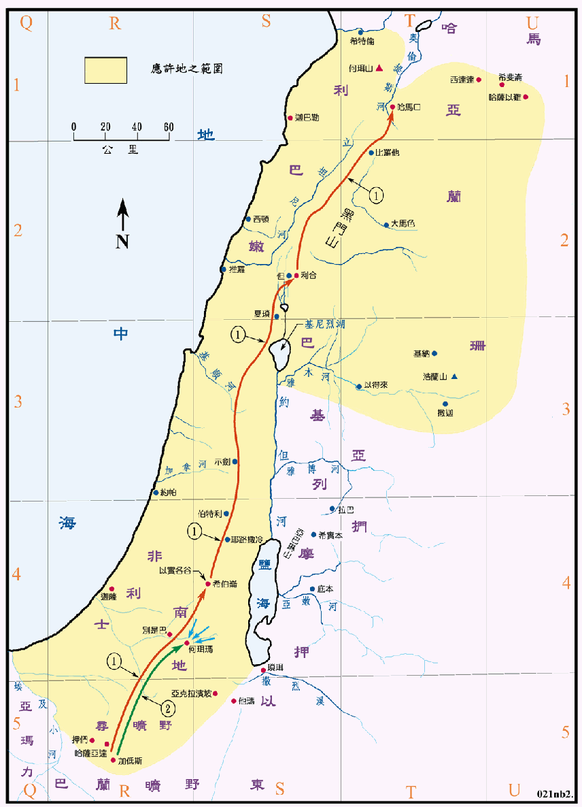

1445～1407BC

行动线说明
| 序号 | 圣经 | 说明 |
|---|---|---|
| 1 | 民13:17-29 | 派探子窥探迦南地，从南地直到哈马口。 |
| 2 | 民14:43-44 | 擅自攻打迦南人，但被迦南人击败。 |
| 民14:25 | 神令以色列人转回，从红海的路往旷野去，就开始在旷野中飘汤了卅八年。 | |
| 民27:12-14 | 摩西上亚巴琳山。(参看申图03) | |
| 民34:1-12 | 应许地四境之边界。 |
摩西在巴兰旷野打发十二个探子去窥探迦南地。探子们从寻的旷野直走到哈马口，再回到加低斯，往返共四十天，但圣经中并没有说明其所走之路线和详情，图中所绘的只是主线，是当时的国际大道，沿线只有几个大城，想必他们也去窥探了主线以外的一些城市，经上并未说明或记载。以色列人从他们所带回的水果，确知迦南果然是流奶与蜜、极为富庶之地，然而那里的人民却强壮高大，城邑也坚强宽广。当时是 1445BC，埃及是迦南地名义上的大封主，控制力仍很强，而且迦南人也是强大的，虽然没有中央政府，但有诸多的城邦，各有其王，城与城间常联合或互相攻打，所以他们经常备战，战斗力强，军备优良，城防也很坚固，有的甚至可以抵抗数个月的围攻，这是只有成军不足两年的以色列人所可望其项背的，从以色列人攻击南地的亚玛力人和迦南人失败看出来，此时没有进攻迦南，在军事上是相当明智的。
探子回来报告迦南地的情形后，民众十分的惶恐，当下全会众发怨言，要另立一个首领回埃及，因此耶和华发怒，令以色列人转回从红海的路往旷野去，於是以色列人开始了卅八年在旷野中的飘流。
探子所窥探的地区，就是民卅四章中耶和华对摩西所说，给与九个半支派的应许之地，与日后以西结所预言的相同，南北和西方的界限都很清楚，只是东北部有欠明确。